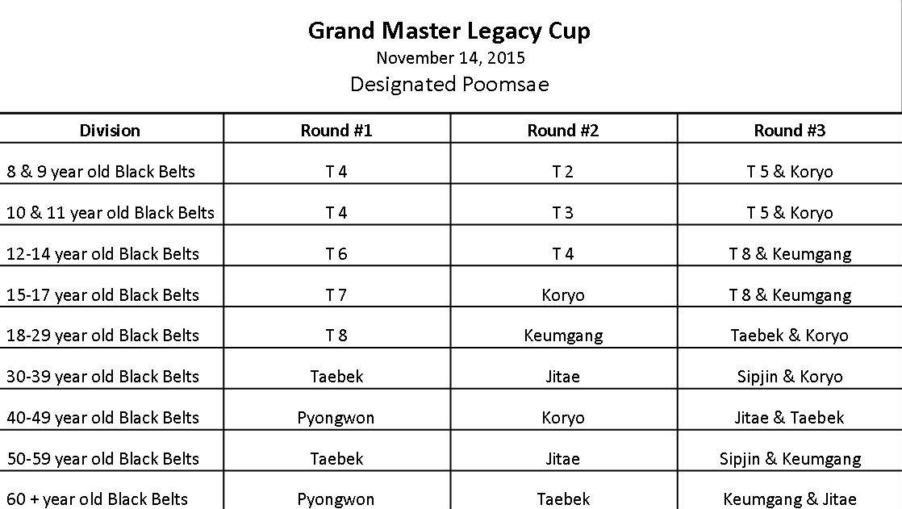

Information and Rules
Rules for every event listed below

Approved Tae Guek belts, Gups, and Forms
White — 10 and 9 Gup — Taeguek 1
Yellow — 8 and 7 Gup — Taeguek 2
Green — 6 and 5 Gup — Taeguek 3 or 4
Blue — 4 and 3 Gup — Taeguek 5 or 6
Red or Brown — 2 and 1 Gup — Taeguk 7 or 8
To ensure the competitors get put into the correct division, please wear appropriate color belt. If your school have different color belts, like purple, please make sure the student knows which Gup they are. If a competitor does a different poomsae than is listed for the division the judges will all give a 5.0 score.
Individual Traditional Poomsae
Allowed Traditional Poomsaes are: Tae Guek family and Black belts (Koryo, Keum Gang, Tae Baek, Pyong Won, Sip Jim, Gi Tae, Cheon Kwon, Han Soo, Il Yo) for appropriate Dan.
Judges will all score between 5 and 9.9. Based on how they feel the poomsae was performed. Similar to the way poomsae was scored in years past. Judges are not scoring separate categories.
Deductions – assessed after final score is calculated.
Participant crosses outside the ring (1 point deduction)
Participant exceeds the 90-second time limit (1 point for every 10 seconds over)
Unsportsmanlike conduct (1 point)
Black Belts Sport Poomsae

Team/Group Traditional Poomsae
(2 – 10 Participants all belts)
(Each participant must sign up for this event separately)
Allowed Traditional Poomsaes are: Tae Guek family and Black belts (Koryo, Keum Gang, Tae Baek, Pyong Won, Sip Jim, Gi Tae, Cheon Kwon, Han Soo, Il Yo) for appropriate Dan.
Judges will all score between 5 and 9.9. Based on how they feel the Team/Group performance was. Similar to the way poomsae was scored in years past. Judges are not scoring separate categories.
Deductions – assessed after final score is calculated.
Team member crosses outside the ring (1 point deduction)
Team exceeds the 90-second time limit (1 point deduction for every 10 seconds over)
Too many or too few team members (1 point deduction per member)
Unsportsmanlike conduct (1 point)
Individual Creative Poomsae without weapons
No Traditional forms from any style of martial arts
Music is allowed – * contact us about this
Props are allowed and must be appropriate for family environment. (examples, a hat is allowed, NO weapons are allowed.) Breaking boards ARE considered a prop and are acceptable. All props must be provided by the participant.
Judges will all score forms between 5 and 9.9. Based on how they feel the poomsae was performed. Similar to the way poomsae was scored in years past. Judges are not scoring separate categories.
Deductions – assessed after final score is calculated.
Participant crosses outside the ring (1 point deduction)
Participant exceeds the 90-second time limit (1 point deduction for every 10 seconds over)
Unsportsmanlike conduct (1 point)
Individual Creative Poomsae with weapons
No Traditional forms from any style of martial arts
Music is allowed – *contact about this
Props are allowed and must be appropriate for family environment. (examples, a hat is allowed). Breaking boards ARE considered a prop and are acceptable. All props must be provided by the participant.
Only martial arts weapons are allowed
Judges will all score between 5 and 9.9. Based on how they feel the poomsae was performed. Similar to the way poomsae was scored in years past. Judges are not scoring separate categories.
Deductions – assessed after final score is calculated.
Participant crosses outside the ring (1 point deduction)
Participant exceeds the 90-second time limit (1 point deduction for every 10 seconds over)
Each time participant drops weapon (1 point deduction)
Unsportsmanlike conduct (1 point)
Demo Team
3 to 40 team members
Music is allowed – *contact about this.
Teams have 2 minutes to set up
Teams have 7 minutes time limit, NOT including set-up.
Ring dimension will be at least 10 meters x 10 meters.
Props are allowed and must be appropriate for family environment. (examples, a hat is allowed) . Breaking boards ARE considered a prop and are acceptable. All props must be provided by the participant.
Only martial arts weapons are allowed
Judges will all score between 5 and 9.9. Based on how they feel the overall demonstration was. Similar to the way poomsae was scored in years past. Judges are not scoring separate categories.
Deductions – assessed after final score is calculated.
Participant crosses outside the ring (1 point deduction)
Participant exceeds the 120-second time (2 minute) limit for set-up (1 point deduction for every 10 seconds over)
Participant exceeds the 120-second time (2 minute) limit (1 point deduction for every 10 seconds over)
Unsportsmanlike conduct (1 point)
Individual Jumping High Kick
(All ages)
All competitors must provide at least 3 boards for each breaking event (more for combo break). They are available at the tournament $5 per 3 boards.
Each participant has a maximum of 30 seconds to attempt to break with a Running Jumping Front Kick.
Each participant has only one attempt to break the board for each round.
Participants may not cover the breaking foot with any bandages, tape, or any other material.
The running distance is approximately 6 meters, and the starting board height will be determined by the referee.
The order of participants (who breaks first) will be determined by height. The shortest person in division will attempt to break first.
Kicks must be in UPWARD MOTION, not downward after missing and hitting on way down.
Participants must break the board to advance to the next round. A cracked/hanging board will be counted as a break.
After each round the board height will be raised, determined by the referee.
The participant to break the highest board will be the winner.
If two participants fail to break the board at the highest spot, both will get one more attempt. If still a tie, the shortest participant will be declared the winner.
Non-Break – If any part of the body touches the floor other than the feet, immediate failed attempt.
Individual Flying Side Kick
(All ages)
All competitors must provide at least 3 boards for each breaking event (more for combo break). They are available at the tournament $5 per 3 boards.
Each participant has a maximum of 30 seconds to attempt to break with a Flying Side Kick.
Each participant has only one attempt to break the board for each round.
Participants may not cover the breaking foot with any bandages, tape, or any other material.
The running distance is approximately 6 meters, and the starting board distance will be determined by the referee.
The order of participants (who breaks first) will be determined by height. The shortest person in division will attempt to break first.
Participants must break the board to advance to the next round. A cracked/hanging board will be counted as a break.
After each round the board distance will be increased, determined by the referee.
The participant to break the farthest board will be the winner.
If two participants fail to break the board at the farthest spot, both will get one more attempt. If still a tie, the youngest participant in junior divisions & eldest in the senior divisions will be declared the winner.
Non-Break – If any part of the body touches the floor other than the feet, immediate failed attempt. Or the participant knocks over the jumping bar, either at the start or at the end.
Individual Power Breaking
(Ages 14 and up) (Green Belts and Higher)
All competitors must provide at least 3 boards for each breaking event (more for combo break). They are available at the tournament $2 per board.
Boards must be 1″ pine – 12 inches by 12 inches
The participant will attempt to break 1-inch pine boards with spacers. Boards will not be taped.
Prior to division contestants will tell judge privately how many boards they will attempt.
All boards will be placed on blocks, which are approximately 4 inches tall from floor.
Each participant has a maximum of 30 seconds to attempt to break.
Once referee declares “ShiJak”, participant may not touch the boards.
Participants may not cover the breaking hand with any bandages, tape, or any other material.
Any hand or elbow technique may be used.
The participant MAY jump prior to attempting the break, both feet MAY leave the ground.
Participant who breaks the most boards will be declared the winner.
If two or more participants break the same number of boards, the participant who attempted to break the greatest number of boards will receive higher score.
(Example: Participant #1 attempts to break 6 boards and only breaks 4. Participant #2 attempts to break 4 and breaks all 4. By number of boards attempted, Participant #1 is the winner of tie breaker.)
If there is still a tie for first place, the winner will be declared by body weight. (The lightest person will be declared the winner.)
Deductions – Participant exceeds the 30 second time limit (1 board per 10 seconds over), or unsportsmanlike conduct (1 board per occurrence).
Non-Break – Participant tries to break boards twice, or after attempting the break, participant falls down after breaking, touching the ground with any part of the body above the knees (the hand that broke the boards IS permitted to touch the ground after the break. Also, a knee touching the ground is allowed.)
Individual Combination break
(All ages)
All competitors must provide at least 3 boards for each breaking event (more for combo break). They are available at the tournament $5 per 3 boards.
The participant will attempt to break demo boards.
The participant will get 60 seconds to set up and 60 seconds to execute their breaks.
Maximum of 5 boards may be attempted, each break must be single boards.
Participants should provide their own holders.
Contestants will get THREE attempts per board.
Participants may not cover the breaking hand or foot with any bandages, tape, or any other material.
Any taekwondo (hand, foot, or elbow) technique may be used.
Props will NOT be allowed.
Participant who receives the highest score will be declared the winner.
Judges will all score between 5 and 9.9. Based on how they feel the poomsae was performed. Similar to the way poomsae was scored in years past. Judges are not scoring separate categories.
Deductions –
Participant exceeds the 60 second time limit during setup (1 per 10 seconds over).
Participant exceeds the 60 second time limit during execution (1 per 10 seconds over).
Participant exceeds the maximum number of attempts per break, maximum of 3 attempts (1 point deduction per infraction)
Participant crosses outside of the 7 meter x 7 meter ring (1 point deduction for each infraction).
Unsportsmanlike conduct (1 point deduction).
Sparring
All ages | 8 years old and up Red/Brown and Black Belt divisions please be ready to compete when we start the sparring. These divisions will be called first.
Safety Equipment required: Head gear, chest protector, fore arm pad, shin/instep pad, mouth piece, martial arts uniform, and groin cup (for males required) all in good condition. All equipment available for purchase at venue.
All divisions will be bracketed in the staging area. All participants must report to the staging area when their age division is called.
Brackets are set up at the discretion of tournament personnel.
All divisions (except 14 and older Black Belt) will be two rounds of 90 seconds each with a 30 second rest period.
14 and older Black Belt divisions will be 2 minute rounds, with Gold medal match a 3 round match.
The winner will be determined by the one who scores more points at the end of the second round. If it is a 3 round match, at any point after end of second round, a competitor gets a 12 point lead the match is over.
11 and younger color belts NO head contact will be allowed.
Ages 8-11 (Black Belts), 12-13 (All Belts), 14-17 (Color Belts), and 18-Up (Color Belts), will be allowed Controlled head contact, meaning touch for full point, to hard and a “Gam-Jeom” will be declared, and possible disqualification.
14 and Over Black Belts will be Full Head Contact, points will be awarded for touches too.
Points:
1 point for body punch or “basic” kick to the body
3 points for turning or spinning kicks to the body
3 points for head kicks
4 points for spinning head kicks
All divisions will be single elimination, with losers fo first round fighting one “bonus” match (this does not mean they get chance to fight back for Gold medal). 14 and older Black Belts May be fighting double elimination (this will be determined the day of the event)
Black Belt divisions will be using the Daedo scoring system – NO rental fee for Daedo chestgear.
Modified WTF and USAT rules will be used. USAT rules listed here: http://www.teamusa.org/usa-taekwondo/v2-resources/referee-information
Kyong-Go’s and Gam-Jeom’s will be given by the center referee. (Contact us for list of penalties if needed)